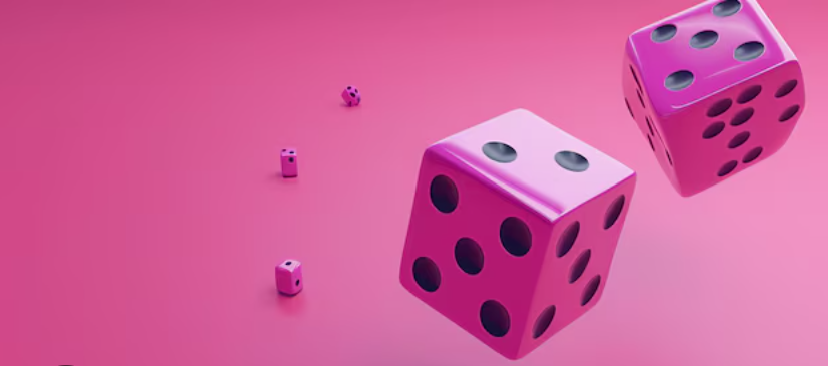

- Getting Started: Simply open the Dicer application. You'll see the main Dicer interface, ready for your first roll.
- How to Roll: To roll the die, just click on play.
- See Your Result: As soon as you click, a random number will instantly appear on the screen. This is your dice roll!
- Understanding the Number: Dicer simulates a standard [e.g., six-sided] die. The number displayed will be a whole number between 1 and [e.g., 6].
- Rolling Again: Need another number? No problem! Simply click again. Each click will generate a new random number.
- Purpose of Dicer: Use Dicer whenever you need a quick random number – for board games, making decisions, classroom activities, or just for fun!
- Exiting Dicer: When you're finished using Dicer, simply close the application window as you would with any other program on your device.